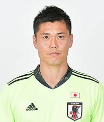

幼稚園の年中から高校まで約14円間サッカーを続ける
同じく幼稚園の年中から小学校5年生ま水泳を続ける
同じく幼稚園の年中から小学校6年生まで習字を続けるく
同じく幼稚園の年中から小学5年生か6年生まで地元のスポーツクラブに通う
小学校5年生から約1年間パソコン教室に通う
中学校では通っていた中学にサッカー部がなかったため地元のクラブチームに入る
中学校ではメインはサッカーの練習であったものの陸上部に入部し週に1,2回練習をしていた
| 川島永嗣 |  |
|---|
自分の中で大切にしている言葉は多くありますがここではいくつか紹介します
夢は叶うもの 叶わなければ まだ努力が足りないという事